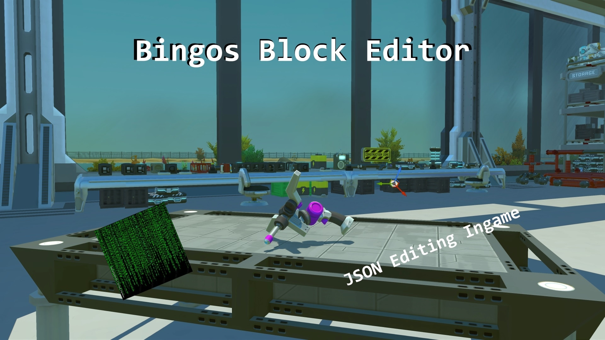

Select in groups
Click or box-drag logic parts into groups A, B and C. Box select works in 3D or one layer at a time, and every part shows its place in the group, so you always know what gets wired to what.
TobyWand is a handheld logic tool for Scrap Mechanic. Select gates into groups, wire hundreds of them in one click or a few lines of Lua, step through your circuit tick by tick, and turn a truth table into a clean lookup table.
Everything works on normal game parts. Creations you build with TobyWand run without the mod.
Click or box-drag logic parts into groups A, B and C. Box select works in 3D or one layer at a time, and every part shows its place in the group, so you always know what gets wired to what.
All-to-all, zip (A0→B0, A1→B1…), chain, ring or self-wire. Connect, cut or flip, clear inputs and outputs, and undo any of it.
Press Q and drag from part to part, like the connect tool, with every change logged. Step through the log in the world with arrows and undo any entry, not just the last.
Set every gate in a group to one mode, or every timer to one delay (5t, 2s, 1s 5t). The creation stays on the lift and your groups are kept.
Timing from inputs to outputs, loops, glitch risks and truth tables. The step debugger runs your logic one tick at a time, forward and back, without touching the creation.
Load the logic between A and B as a table, edit it, and Build LUT rebuilds it as an optimised lookup table: ROM or XOR style, whichever is smaller.
TobyWand is for logic: groups, wires, gates and timers. It doesn't move, rotate or reshape blocks and parts.

For editing blocks and parts themselves, Bingo's Block Editor lets you edit a creation's JSON right in game. Use it for the blocks, and TobyWand for the logic.
The built-in editor has syntax highlighting, formatting and a script library. Your groups are plain Lua lists, so a decoder or a shift register is a few lines. Nothing is wired unless the whole script runs.
Documentation-- zip A to B by position
connect(sort(A, "x"), sort(B, "x"), "zip")
-- only the XOR gates in A drive B
local xors = filter(A, function(p)
return p.mode == "XOR"
end)
connect(xors, B)
print(#xors, "XOR gates connected")TobyWand isn't released yet. Follow along on the tutorials page, or get in touch if you want to try it early.
Download